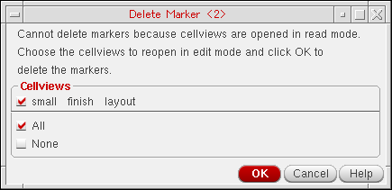

Deleting Markers
You can delete specific markers individually or delete all markers at one go.
Deleting Specific Markers
To delete specific markers in a design window:
-
Select the marker that you want to delete. To select multiple markers, you can draw a selection box around them.
You can also use the Find Marker form to find the marker you want to delete. -
Choose Verify – Markers – Delete.
The markers are deleted. You can continue deleting the markers by clicking on them. -
Optionally, press
F3to open the Delete Marker form.
-
Set the cellview access mode as read or edit in Cellview Access Mode and delete the marker.
-
If you set cellview access mode to edit, select the Confirm Access Mode Change check box. Then, point at a marker on the canvas to delete it. The Delete Marker dialog box appears for you to confirm opening the selected cellviews in edit mode.
Select the cellviews that you want to open in edit mode and click OK. If you do not want to open the cellviews in edit mode, select None and click OK. - If you set the Cellview Access Mode to read, then point at a marker on the canvas to delete it. The marker is deleted and the cellview remains in read mode.
-
If you set cellview access mode to edit, select the Confirm Access Mode Change check box. Then, point at a marker on the canvas to delete it. The Delete Marker dialog box appears for you to confirm opening the selected cellviews in edit mode.
- Continue deleting the markers as required. When done, click Cancel in the Delete Marker form.
Deleting All Markers
To delete all markers in a design window:
-
Choose Verify – Markers – Delete All.
The Delete All Markers form opens.

- Select the Severity types, Search Scope, and Source.
- In the Options section, select the Cellview Access Mode.
-
Click OK or Apply.
If you set Cellview Access Mode to edit, select the Confirm Access Mode Change check box, and then click OK or Apply. The Delete All Markers dialog box appears for you to confirm opening the selected cellviews in edit mode.
Select the cellviews that you want to open in edit mode and click OK. If you do not want to open the cellviews in edit mode, select None and click OK.
If you set the Cellview Access Mode to read, the Confirm Access Mode Change check box is disabled. Click OK or Apply. The markers are deleted and the cellview remains in read mode.
Related Topics
Return to top